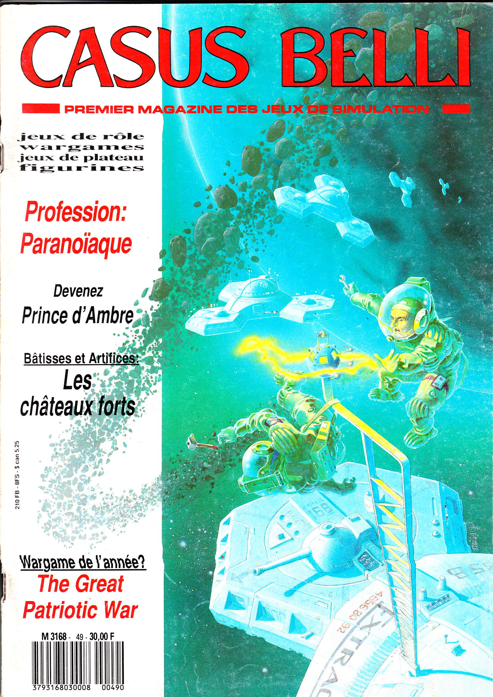
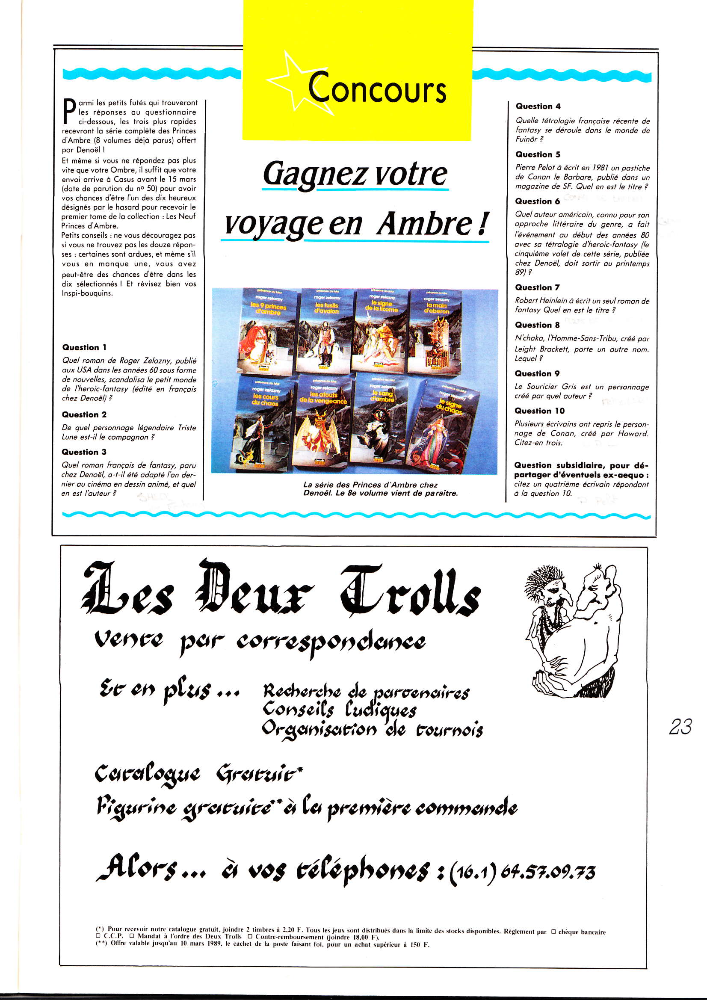

Bonne année 1989, avec un peu (ou beaucoup si on ajoute les 35 ans de décalage) de retard ! Le CB 49 inaugure en effet l’année pour le bimestre janvier – février. Année qui commence comme la précédente qui s’est finie : le sommaire du Casus s’ouvre sur des missiles balistiques nucléaires pour rappeler qu’on est encore en pleine Guerre Froide, même si celle-ci vit sa dernière année, et le bicentenaire de la Révolution Française qui sera célébré ce juillet n’augure aucune révolution à venir, à part peut-être celle de la chorégraphie confiée à Jean-Paul Goulde.
Et pourtant, si on savait pour cette année de Tien An Men à un Mur désormais disparu de Berlin… Mais avec ce début 1989, les actualités restent relativement sages. On notera dans le monde les quelques événements suivants. Si l’Algérie semble se normaliser et rejoint notamment une fantômatique (ou fantasmatique) Union du Maghreb Arabe, aux côtés de voisins aux relations aussi cordiales que la Lybie ou le Maroc, l’islamisme violent commence à germer avec la création du FIS à la même période qui plongera bientôt le pays dans la guerre civile.
Autre guerre civile qui se dessine alors que l’espoir apparaissait pourtant, celle d’Afghanistan avec le retrait des dernières troupes soviétiques et le début des affrontements entre chefs de guerre. Même guerre civile qui dure aussi au Liban, où la Syrie et l’Iran manipulent allègrement ce voisin malheureux. L’Iran sort lui-même du conflit avec l’Irak mais continue d’occuper le devant de la scène mondiale quand Khomeiney, pas encore mort, émet sa fatwa contre Salman Rushdie et son livre Les Versets Sataniques.
Si on continue vers l’Asie, l’autre grand événement international est la mort de l’Empereur du Japon, Hiro Hito, miraculeusement préservé après la fin de la Seconde Guerre Mondiale malgré les crimes de guerre et contre l’humanité commis par l’armée japonaise sous son règne. Tous les dirigeants internationaux se retrouvent à son chevet, dans un Japon qui est alors au fait de sa domination économique sur la région, même si on commence à parler de la relève avec la Corée du Sud, Taïwan, Singapour et Hong-Kong. La Chine est alors complètement hors jeu, bien que Deng Xiaoping ait engagé le pays dans une réforme économique (mais pas politique) déjà engagée depuis quelques années, et dont on va reparler bientôt.
Sur le continent américain, et même si l’événement est moins retentissant que ce qui va se passer en Europe de l’Est, l’Amérique Latine amorce elle-même une nouvelle ère : le contexte de guerre civile en Amérique Centrale s’estompe, l’Amérique du Sud se démocratise lentement avec le renversement d’une des dictatures les plus dures au Paraguay, et cette partie du Continent cherche son salut économique entre réduction de sa dette, et espoir (pour le Mexique) tourné avec l’ALENA qui se met en place entre le Canada et les Etats-Unis. Chez nos amis ricains, c’est donc George Bush (le père) qui prend ses fonctions de POTUS après son élection de novembre, alors que les actualités du quotidien résonnent encore étrangement avec celles de notre époque : tensions raciales à Miami ou avec le verdict très clément du procès de Bernie Goetz qui aura tenu le pays en haleine pendant 4 ans, et tuerie de masse dans une école à Stockton, et la sempiternelle émotion nationale et débat ensuite pour limiter la circulation des armes à feu… C’est aussi en ce début d’année que les Etats-Unis commencent à mettre en place le premier élément satellitaire de l’ensemble qui permettra le GPS à venir.
Retraversons l’Atlantique pour nos rivages, d’abord chez nos cousins de l’Est où les deux pays qui ont semé ce qui va permettre de déchirer le Rideau de Fer font l’actualité de ce début d’année. En Pologne, le gouvernement de Jaruzelski accepte enfin de discuter avec Walesa et Solidarnosc pour mettre un terme aux grèves et aux troubles qui agitent le pays depuis plusieurs mois. En Hongrie, ce mois de février autorise et inaugure le premier pluralisme politique dans les Républiques Populaires, en autorisant d’autres partis que ceux d’obédience communiste et soviétique !
On termine avec les nouvelles de part chez nous. L’actualité politique est encore animée par l’affaire Pechiney-Triangle que j’évoquais dans le numéro précédent, tandis que la campagne pour les prochaines élections municipales bat son plein. C’est aussi en ce début d’année que Marc Blondel et son gros cigare s’installe à la tête de Force Ouvrière. Enfin, on sent que la décennie 1980 touche à sa fin avec le procès des militants d’Action Directe, qui achève les campagnes de violence terroriste des organisations d’extrême-gauche qui ont pu émailler les années 1970-1980.
Il est temps maintenant de se pencher sur notre Casus 49 de ce bimestre

La couverture est de Pascal Trigaux et on peut voir dessus dans les sujets qui seront abordés dans ce numéro une mystérieuse mention « Devenez Prince d’Ambre », bien avant la parution de la célèbre version sans dés. Cela promet une grosse surprise à l’intérieur !
Mais avant de la découvrir, regardons les sorties pour ce début d’année 1989. En VF, la production nationale est encore foisonnante : CROC sort du matériel pour Bitume et Animonde, pareil pour Dragon Radieux qui annonce le mythique Hurlements. Descartes parvient également à imposer de la création française sur Cthulhu (la campagne Les Œufs de Karlatt) ou le Jeux Descartes + spécial James Bond (avec un écran alternatif), tout en continuant ses traductions (Le Manuel du Service Q) pour le même James Bond, Le Guide pour Star Wars, la 2ème édition pour Paranoïa et même Killer de chez Steve Jackson Games.
Même chose chez Oriflam avec la création française à l’honneur : la complète réécriture de l’Île Brisée pour Hawkmoon, l’écran pour Multimondes (annoncé mais finalement jamais paru), Krystal (un jeu de plateau d’Heroic Fantasy), aux côtés de traduction comme Genertela ou le jeu de plateau La Fureur de Dracula. Siroz accélère aussi avant d’intégrer CROC dans l’aventure avec l’annonce de Whog Shrog et d’Athanor. Même Transecom tente de tenir le rythme avec la parution de la VF des Royaumes Oubliés alors que ses jours sont comptés pour cette année. Ca bouge dans l’Hexagone !
Du l’autre côté de l’Atlantique, c’est plus la sinistrose, ce qui annonce de mon point de vue un marché en train de se retourner et qui va sonner le glas de l’Âge d’Or aussi chez nous. Seul GDW qui sort la grosse artillerie avec Space 1889, et continue de développer Traveller, Twilight 2000 et 2300 AD soutient le marché dans ce début d’année. TSR reste aussi un poids lourd qui semble tout miser avec la sortie à venir de la 2ème édition d’AD&D, et le développement des Royaumes Oubliés, tout en continuant de soutenir des titres électiques : relance de Dragonlance et Greyhawk, continuation de D&D (les Gazeteers), et même soutien de Marvel Super Heroes et Top Secret. Enfin Steve Jackson Games sort la 3ème édition de GURPS qui va permettre l’explosion du développement de sa gamme.
Les Têtes d’Affiches abordent plus spécifiquement la VF de Warhammer critiquée (trop) sagement par Pierre Lejoyeux, @Tristan semble lui-même moyennement se passionner dans sa revue des Royaumes Oubliés même s’il en salue sa cohérence exceptionnelle (m’enfin !), ou L’Arc en Ciel des Ténèbres pour Animonde par Pierre Rosenthal. On retiendra plus les deux critiques sur des ouvrages complètement confidentiels à l’époque mais qui allaient marquer : les Murphy’s Rules chez Steve Jackson, et la 2e édition d’Ars Magica chez Lion Rampant avant de migrer chez White Wolf.
Têtes d’Affiches donc un peu maigres pour ce numéro pour laisser de la place à l’Epreuve du Feu de Multimondes, où Casus sort de sa neutralité bienveillante (si vous voulez la critique complète, Pierre Rosenthal l’a publiée sur le GROG) pour écorner à juste titre ce jeu brouillon de Michel Gaudo et Hervé Fontanières qui tentent de se reposer sur leurs lauriers acquis avec Maléfices. Et une page dédiée à la première édition de Cyberpunk, celle de 2013 et pas encore 2020, où le même Pierre (Rosenthal, pas Lejoyeux suivez un peu 😄 ) pressent le potentiel du jeu, et surtout du genre.
Plus inattendu, Space Master inaugure il me semble la première rubrique Portrait de Famille qui va se pérenniser dans le magazine. Etrange d’avoir démarré avec ce jeu en VO et confidentiel, mais les auteurs – toujours Pierre Lejoyeux et Fabrice Lamidey, le futur comparse de Frédéric Weil chez Multisim – brossent un panorama complet sur deux pages. Probablement pour proposer au lectorat de Casus une alternative à Traveller et Star Wars qui tiennent alors le haut du pavé, en mettant en avant que l’univers proposé par Space Master (qui n’est donc pas qu’une boîte de règles dérivées de Rolemaster) louche fortement vers Dune. Quand je vous disais avec les Princes d’Ambre que ce Casus serait particulièrement littéraire.
Je repasse sur les informations plus rédactionnelles. On avait déjà vu que la rubrique What’s your game avait disparu, faute de correspondants aux US et UK, mais après l’Allemagne, Casus tente à nouveau avec ce numéro de déborder les frontières côté méditerranée avec une revue des magazines de JDR en Espagne en guise de chapitre I, et un chapitre II sur l’Italie qui ne paraîtra jamais.
Du côté des médias et de la panique morale, suite au manifeste publié dans le numéro précédent, le Barbare massacre sur une double page la série Voisin, Voisine dont un des épisodes tente de préfigurer une partie caricaturale de jeu de rôle. Petit détour ou rappel pour présenter cette série française improbable et emblématique de la fin de la décennie :
Première fois que le loisir est mentionné à la TV française ? (si quelqu’un a moyen de retrouver un enregistrement de cet épisode du 26 décembre 1988, ça m’intéresse !). Toujours dans cette ambiance de panique morale diffuse, on lira aussi avec attention la lettre d’un des lecteurs de Casus, psychiatre de profession, dont le ton et le regard lucide sur le loisir fait regretter que ses coordonnées n’aient pas été conservées quelques années plus tard pour contredire les Abgrall et consorts. Toujours dans les correspondances, Casus aussi s’agace d’un courrier indigné d’Alain Gassner qui n’a pas été crédité pour Hawkmoon, début du divorce avec Casus qui ne lui a jamais commandé de couverture il me semble ?
On passe sur les Inspis Bouquins et BD avant d’attaquer les scénarios. Comme d’habitude, Roland Wagner nous livre une rubrique savante mais parfois cryptique vu les écrivains très confidentiels dont il conte les éloges, parfois visionnaires, parfois à côté, parfois les deux ? Ainsi pour Un vampire ordinaire Poche de Suzy Mckee Charnas qui semble à Ann Rice ce que Prédateurs a été à Vampire la Mascarade. On retrouvera cependant quelques classiques qui ont davantage traversé les temps : Clive Barker, Poul Anderson, Michael Moorcock, Robert Silverberg, Gérard Klein. Et pardon pour les Hugues Douriaux ou Laurent Genefort que mon ignorance crasse en lecture SF condamne peut-être inutilement.
Pour les BD, on a le même mix d’œuvres mémorables et oubliées : du très bon comme la Balade au bout du Monde (tome 4) côtoie la jeune encore série de XIII (tome 5) et moins jeune de Thorgal (déjà à son tome 13), ou encore Les Chemins de Malefosse (tome 5) ; je retiens en revanche moins Le Maître des Brumes (tome 2) ou Ivor (tome 5) qui sont également cités…
Mais l’affaire de ce numéro sur les inspis Bouquins est moins la rubrique de Roland que la présentation de la Saga des Prince d’Ambre qui est un dossier complet de ce numéro. Ce sont les GE Ranne, encore méconnus, qui portent cette ambition. On trouve d’abord un jeu – concours avec Denoël pour gagner les 8 volumes traduits en français (eh oui, la saga est encore limitée à ces 8 tomes) avec leurs couvertures déjà mémorables de Florence Magnin. Je vous remets le questionnaire de l’époque que même avec un Google-Fu au top, il n’est pas certain d’arriver à trouver toutes les réponses aujourd’hui.

Cela continue avec un dossier qui se limite malheureusement à surtout traduire les éléments clé de la saga (la Cour d’Ambre, la Marelle, le Chaos, les Atouts…) en adaptation technique avec AD&D et Rolemaster. En ces temps reculés, on est encore loin de la perspective complètement à contre-courant du système sans dés à apparaître ! Le meilleur morceau, et plus intemporel, est l’interview de Zelazny – paix à son âme – qui dévoile les prémisses du fameux JDR à venir en mentionnant un certain Eric Quelque Chose avec un nom polonais (paix à son âme également) ! Bref, tout le dossier n’a pas forcément très bien vieilli mais il vaut son pesant de cacahuètes pour l’édification de l’Histoire rôliste.
On retrouvera aussi Ambre dans l’encart scénario : Ombre sur la couronne, construit comme une enquête (mineure) policière mais avec de grosses conséquences politiques. A redévelopper, le format court ne lui rend pas justice si on se limite seulement à la partie enquête. Les autres jeux proposés sont James Bond 007 avec un scénario dépaysant qui, comme You Only Live Twice, se déroule au Japon. Le scénario est court et pas forcément inoubliable, mais replongé dans le contexte de l’époque de superpuissance économique et technologique devant laquelle même les Etats-Unis tremblent, il vaut de mon point de vue le même décalage que You Only Live Twice en son temps. On complète avec deux opus médiéval-fantastique. D’abord le traditionnel AD&D / Laelith de Denis Beck qui fait partie de mes favoris avec sa PNJ Tourre l’Eventreuse ! De facture classique, je pense qu’il a encore un grand intérêt pour faire jouer des donjonneries ou autres OSR. Ensuite un Runequest qui confirme la production très inégale (en général un sur deux) sur ce jeu dans Casus : tantôt vraiment dans le canon gloranthien, tantôt juste comme jeu alternatif pour faire du (A)D&D. Avec le scénario de ce numéro, c’est vraiment cette deuxième optique, ce qui provoquera un courrier courroucé dans le numéro suivant (et une amende honorable de Casus 😄 ). Et sinon, bien que présenté en Epreuve du Feu, pas de scénar d’intro / démo de Multimondes mais seulement une aide de jeu sur la création de personnages.
Sur les autres aides de jeu de ce numéro, on trouvera un Profession : Paranoïaque qui rappelle que c’est par le JDR Paranoïa que Tristan a démarré sa carrière professionnelle. Complet mais utile seulement si vous êtes un accroc au jeu en question ! Plus générique et toujours dans l’excellence Casus Belli de l’époque, le Bâtisses et Artifices consacre un 1er volet (le 2nd suivra dans le numéro d’après) à l’emblématique château-fort médiéval, avec toujours les magnifiques illustrations coutumières de cette rubrique !
On transitionne ensuite vers les jeux de plateau et les wargames. Il sera donc d’abord question de l’An Mil, jeu de plateau notamment de Jean-Pierre Pécau passablement complexe, et passablement pas bien fini, même si Franck Stora estime que ses défauts sont corrigeables. On trouve sinon une aide de jeu pour débuter à Full Metal Planète. C’est ensuite au tour des wargames, où Casus (Bruno Butaud) s’extasie sur une double page The Great Patriotic War de GDW. Frank Stora fait une revue pour sa part des wargames simulant la guerre civile Espagnole avec une conclusion un peu douteuse, ou plutôt très maladroite. Jean-Baptiste Dreyfus continue ses articles de théorie ludique sur le wargame où il sera question pour ce numéro de Jouer en équipe. Pas mal sinon d’aides de jeu diverses dans la rubrique wargame de ce numéro avec une forte orientation jeu de figurines pour une fois, plutôt que pions en carton. Je survole volontairement car je connais encore moins ce domaine.
La rubrique Ludotique est toujours là et tient ses promesses d’être complètement alignée avec le rédactionnel de Casus. On y trouve en effet une revue des jeux SSI / TSR (Pool of Radiance, Heroes of the Lance), un jeu informatique dérivé de Paranoïa (Complexe Paranoia) (!), et un wargame solide mais pas complètement au point (Decision in the Desert).
Et c’est fini pour ce numéro !